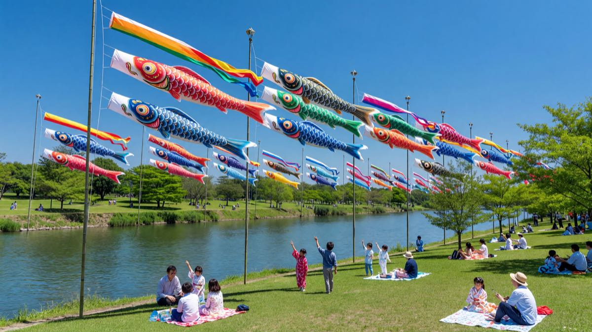

Programme
The day's events, from first light to evening bath
-
08:00
Koinobori raising ceremony
Families gather at the main riverside pole to raise the season's streamers together. The tallest carp goes first.
Ceremony -
09:30
Kabuto and warrior doll exhibition
A curated display of samurai helmets and May dolls in the festival hall. Families with young children are welcome.
Activity -
10:30
Kashiwa-mochi making workshop
Learn to wrap sweet rice cakes in oak leaves with local confectioners. All ingredients provided; take your mochi home.
Food -
12:00
Festival picnic on the riverbank
Bring a blanket and share the midday meal beneath the streamers. Food stalls line the path with chimaki, green tea, and seasonal sweets.
Food -
13:30
Taiko drumming performance
The Matsuri Taiko Ensemble performs on the main stage. A powerful, rhythmic welcome to the afternoon.
Performance -
14:30
Children's koinobori painting
A hands-on workshop where children paint their own miniature carp streamers to take home. Materials provided.
Activity -
16:00
Shobu-yu iris bath preparation
A demonstration of the traditional iris-leaf bath. Fresh shobu leaves are arranged and the story of the custom is shared.
Ceremony -
17:30
Evening lantern walk
As the light fades, paper lanterns are lit along the river path. A quiet close to the day's celebration.
Activity
Festival Guide
Everything you need to know for the day
Arriving and parking
The festival grounds open at 07:30. Parking is available at the north lot (200 spaces) and the riverside overflow (80 spaces). Arrive early for the raising ceremony.
Family rest areas
Covered pavilions with seating are located at the east garden and the main hall. Nursing rooms and changing stations are in the main hall ground floor.
Food and drink
Eight food stalls along the main path serve kashiwa-mochi, chimaki, yakitori, shaved ice, and matcha. The tea house in the east garden is open all day.
Accessibility
All paths are paved and wheelchair-accessible. Sign language interpretation is available at the main stage. Accessible toilets at the main hall and east pavilion.
Festival Grounds
Navigate the celebration
Family Album
Moments from Kodomo no Hi


